Live Link connects OpenCAGE to Alien: Isolation while the game is running. With the game playing the level you have open, the script edits you make reach it moments later, without saving or reloading the level. You can also trigger an entity's methods (start, trigger, show...) in the game straight from the Entity Inspector or a method pin on the flowgraph, have the game's camera and the Viewport's follow each other, and watch your scripts run, as the flowgraph lights up each link the game uses and counts how often each output fires and each method is called.
Live Link is for script tweaks only. What reaches the running game is changes to a level's scripting: entities added or deleted, links made or broken, and parameters changed (moving an entity included). Nothing else is sent.
Changes to models, textures, materials or any other asset, new composites (created, ported or imported), and what Save and Build works out (navmesh, cover, baked lighting) never reach a level that's already running: the game only picks them up when you save the level and load it again. See What Needs a Reload.
It's also the quickest way to light and dress a level: place a light or a prop, move it and change it in OpenCAGE, and the game draws it within a second. See What You Can Do With It.
It makes for quick iteration on a script. Add a DebugTextStacking, give it some text and pick start from ▶ Trigger Method in the Entity Inspector, and the text is on screen in the game (with Enable DebugTextStacking ticked in Launch Game too, so the game draws it). Change the text and trigger start again, and the new text appears on a line under the old one: a DebugTextStacking adds a line each time it starts, and an edit doesn't clear the ones already there (call its clear_all method to empty the stack, or clear_last to remove the newest line).
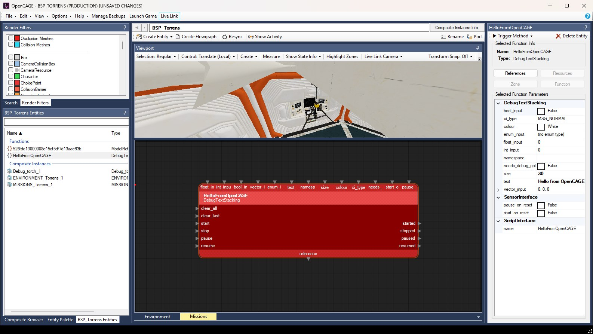
OpenCAGE connected to the game: Live Link is pressed on the main toolbar, Resync sits on the composite toolbar, Live Link Camera on the Viewport toolbar, and the Entity Inspector offers ▶ Trigger Method for the selected DebugTextStacking.
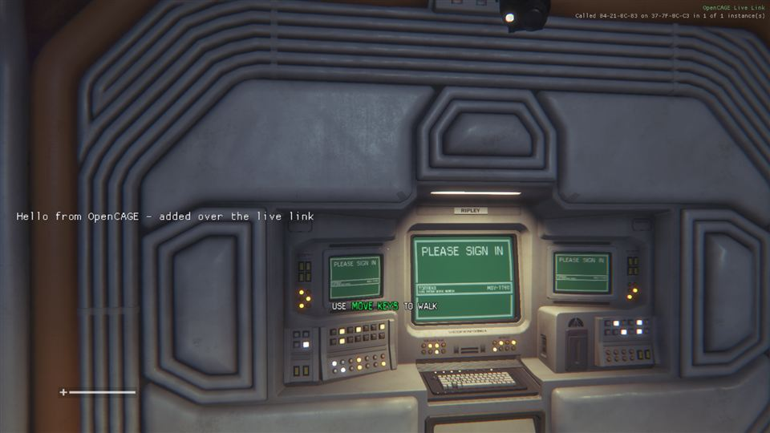
The same DebugTextStacking in the game, added and started over Live Link. In the top-right corner, OpenCAGE Live Link shows the game is connected, with the last thing done underneath.
A few of the things Live Link is good for, each with a link to the details further down. All of it happens in the running game without saving the level, so save when you want to keep your work (see Editing While the Game Runs).
You can put a whole new piece of script together while the game runs: add the entities, link them up, trigger start (or link something to start it), watch what it does, then change it and go again. Every entity and link you add reaches the game a moment later. A test script of a TriggerLooper ticking a LogicCounter, DebugTexts showing the count, a DebugTextStacking logging each tick and a couple of markers was built this way in the root of a running level, and was running within seconds, without a save.
To try it, open the level's root composite (the orange globe in the Composite Browser), add entities with a right-click on the flowgraph and Create Entity → New Function, and drag from one pin to another to link them, as in Creating a Script. Debug Text & Markers builds that counter script step by step, with a picture of it running in the game.
The main limit is a brand-new composite. The running level doesn't have it, so the game turns it away with Composite XXXXXXXX is not in the running level - save and reload the level to add new composites. Build in a composite the level already has (its root, say), and save and reload once you move the script into a composite of its own. See What Needs a Reload.
In a script that's already there, change a value, a delay or some text in the Entity Inspector, or make or break a link on the flowgraph, and the game has it a moment later, with no save and no reload (see What Reaches the Game).
Each entity whose parameters you change is re-initialised (making or breaking a link doesn't do that), so if it was running, it stops. Start it again, or trigger the method that sets the logic off (trigger, start...) with the inspector's ▶ Trigger Method or a right-click on its pin. That way you can run the same bit of script again and again as you tune it, without playing back to the point where it would fire.
This is where Live Link saves the most time. Place a light, move it, and change its colour and brightness in OpenCAGE, and the game lights the level with it within a second. You tune it by eye in the game's own render, rather than saving and reloading after every tweak.
AYZ\Science\Lighting\Small_Floor_Light), or drag a LightReference from the Entity Palette onto the Viewport. Either is created where you drop it (see Creating Entities), and appears in the game straight away.lgt_col for the colour and lgt_spot_IntMult, lgt_omni_IntMult and lgt_emissive_IntMult for the intensities. On a LightReference they're its own colour and intensity_multiplier: a new one starts white at an intensity of 1, so give it a colour and raise its intensity_multiplier and end_attenuation until it clearly lights the space (8 and 3 for the one further down).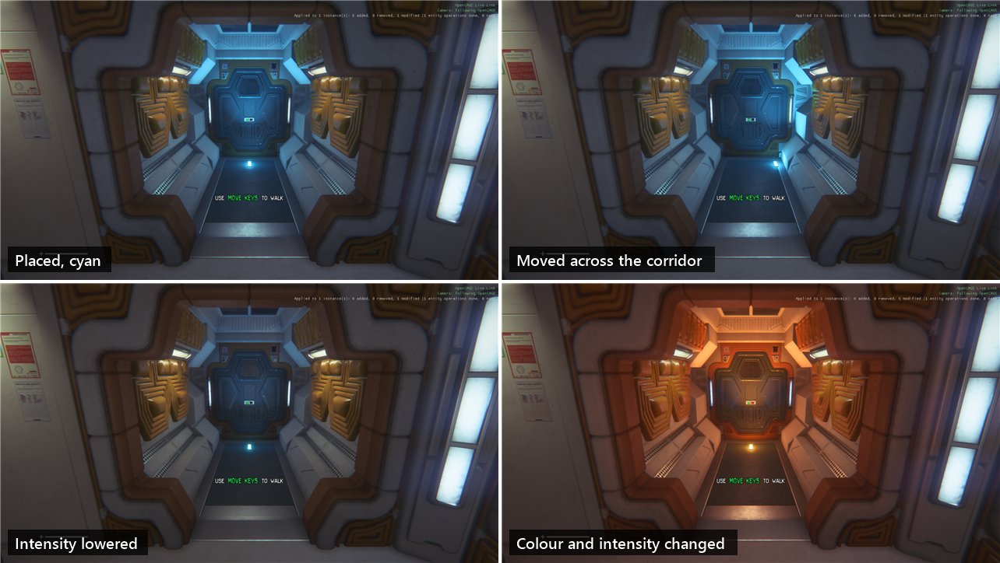
A Small_Floor_Light prefab dropped on a corridor floor, as the game drew it from the Viewport's camera: placed and coloured cyan, moved across the corridor, moved back and dimmed, then given a new colour and intensity. Each change showed in the game within a second.
Because you're looking at the game's render, you see exactly where the light has ended up. Move it too far and you'll see it go behind a door.
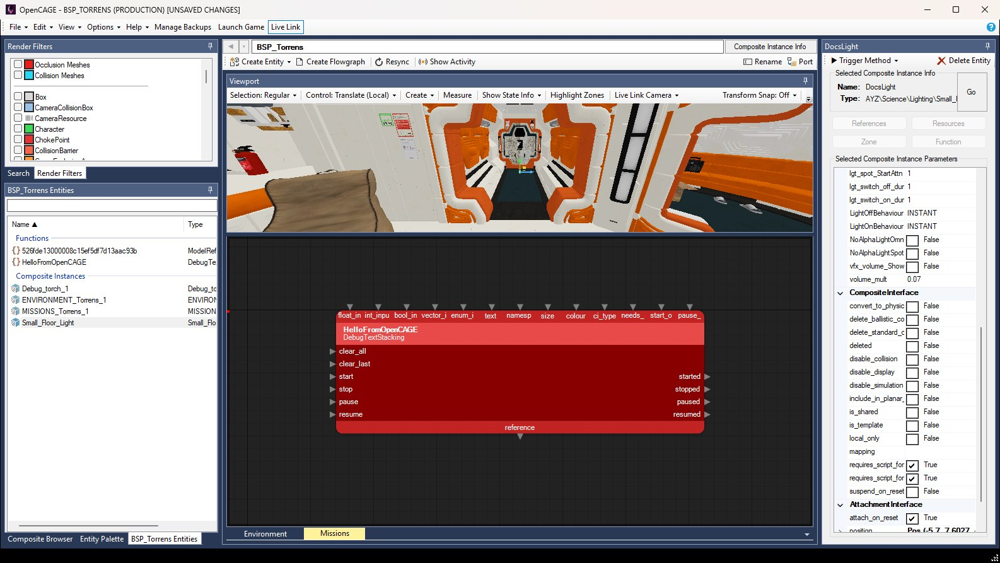
The floor light's instance (named DocsLight in the inspector) selected, with Live Link pressed on the main toolbar. Some of its lgt_ parameters are in view in the Entity Inspector, with the rest of the instance's parameters; scroll up the list for lgt_col and the intensities.
New lights work too. A plain LightReference added to the level's root, with a colour, an intensity_multiplier of 8, an end_attenuation of 3 and light_on_reset ticked, lit the corridor as soon as it was added. Moving it and changing its intensity showed at once, and deleting it took the light away. Adding a LightReference also brings up Its resource references changed (models, collision and the like): those need the level saved and reloaded, on the status bar and in the game's overlay. For a new light that note is expected: the light works anyway.
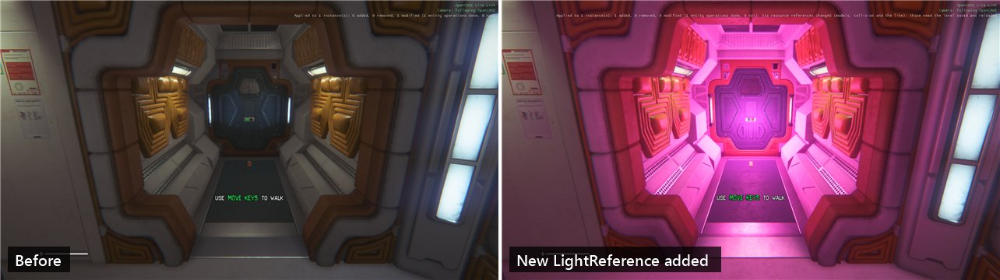
Before, and after adding a plain LightReference: the corridor is flooded magenta the moment it's added. The resource note at the end of the overlay's line is the expected one.
Lights the level already has change the same way: recolour them, or switch them on and off by triggering light_switch_on and light_switch_off (see Triggering Methods), whether their composite is used once or many times.
Baked lighting isn't recalculated. Live Link changes the lights themselves: the light they cast directly. The light that bounces around the level (its radiosity) is baked by Save and Build, so Live Link leaves it as the last build left it. See How Radiosity is Handled for what a build redoes.
Instances of composites the level already has are built by the game as you place them: props, light prefabs, NPC spawns, whole prefab walls. Drag one from the Composite Browser onto the Viewport, move it, turn it or delete it, and the game does the same, so with Live Link Camera following the Viewport you can dress a room while looking at it in the game. The level's own geometry can be moved too. Move the floor the player is standing on, though, and they drop through it for a moment while its collision is rebuilt.
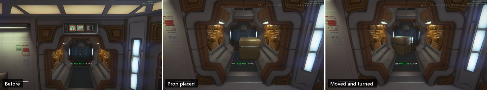
Before (from further back), then a supply crate (an instance of AYZ\_Props_\Static\Generic\Container_Shells) placed in the corridor, then moved and turned, each step drawn by the game straight away.
A model placed on its own, as a new ModelReference entity rather than inside an instance of a composite, isn't built by the running game: the status bar says it's not built, as a level load would not build them. Plain static models come from what Save and Build bakes, so it appears once you use File → Save and Build Level and load the level again. The same goes for new models, imports and material edits, and the navmesh, cover and baked lighting stay as the last build left them too: see What Needs a Reload.
To see a model in the game straight away, place an instance of a composite the level already has that contains it, rather than the bare model. Props such as AYZ\_Props_\Static\Generic\Container_Shells are composites, so find the prop in the Composite Browser and drag it onto the Viewport (see Creating Entities). A model of your own that no composite in the level uses yet still needs Save and Build.
With the debug boxes ticked under Scripting Helpers in Launch Game, the game draws the debug entities, so it can show you what your script is doing: a DebugText shows its text and the values linked to it, updating as they change; DebugTextStackings keep a log of the last five lines, in one block on the left of the screen; a DebugPositionMarker draws axes at a position; and a DebugEnvironmentMarker labels a spot, or an entity it follows. Add them, link them and trigger their start over Live Link like anything else.
Debug Text & Markers covers them all, including how to see a script's values and keeping a log. If a DebugTextStacking's log repeats or skips values, start it from the link that fires once the value has changed (a LogicCounter's on_Up, say) rather than from the same trigger that changes it (two links fired by one trigger run in no fixed order), and link its input straight to the counter's reference.
To see which links a script follows, rather than the values it works with, switch on Show Activity and watch the flowgraph light up as the game runs it.
The game only accepts Live Link connections from the same PC.
Starting the game this way installs OpenCAGE's runtime utils in the game folder with Live Link switched on, and switches the Live Link button on, so OpenCAGE connects by itself a few seconds after the game starts. The status bar at the bottom of the OpenCAGE window says Live Link: connected to the game when it has.
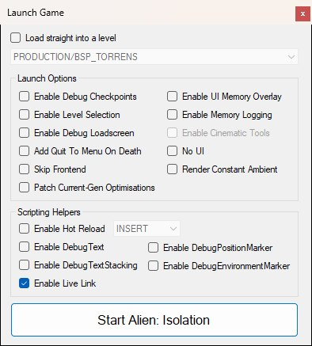
Enable Live Link is the last box in the Scripting Helpers group.
The game loads the level from disk, so edits you haven't saved won't be in it. If the open level has unsaved changes when you press Start Alien: Isolation, OpenCAGE asks whether to save first:
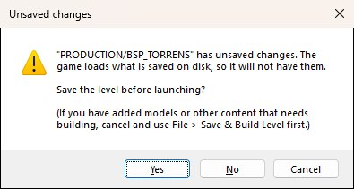
If you've added models or other content that needs building, press Cancel and use File → Save and Build Level first (see Save and Build). The question comes up whenever you start the game with unsaved changes, with or without Live Link.
While this install's game is running and serving Live Link (started with Enable Live Link ticked, as under Requirements), a Live Link button appears on the main toolbar, to the right of Launch Game, and it stays there while OpenCAGE is connected. It shows pressed while Live Link is on, whether it's connected or still waiting for the game, and clicking it switches it off (disconnecting from the game) or back on. Hover over it to see where it stands: connected, or waiting for the game.
The button remembers its setting. Left on, OpenCAGE connects whenever you start the game with Live Link, and reconnects by itself if the game restarts. There's no button for a game started without Live Link, which has nothing to connect to, or for a game from another of your game installs: close it and start this install's game from Launch Game with Enable Live Link ticked.
In the game, OpenCAGE Live Link shows in green in the top-right corner while it's connected, with a line under it for a few seconds about the last thing done: an edit applied, a method called, or something waiting. You can see it in the screenshot above.
While Live Link is connected, your script edits go to the game automatically: there's nothing to press, and no option to hold them back. A moment after you stop editing (about a third of a second, so a drag or a run of undos goes as one), OpenCAGE sends the whole composite you changed, and the game brings every running instance of it in line with the editor, without a reload. The status bar says what the game did with it: how many running instances it applied to, and how many entities were added, removed or changed.
Sending an edit to the game doesn't save it. The level on disk is unchanged, and the edit is still an unsaved change in OpenCAGE. The game only holds it in memory, so it's gone once the game closes or loads the level again (with the hot reload key, a level change, or starting the game again). To keep your work, save the level when you're done: File → Save Level, which closes the game.
Only script edits are sent: these, and nothing else. Anything that isn't on this list (an asset change, a new composite) needs the level saved and reloaded, as listed under What Needs a Reload.
Every entity whose parameters you change (moving it included) is re-initialised: put back in the state it starts the level in, then left to react to the edit, as though the level had just started. So something that was running when you edited it (a Thinker, a looping effect, text a DebugText put on screen, the axes a DebugPositionMarker draws) stops, and needs starting again unless it has start_on_reset set. Triggering its start from the inspector or the flowgraph is the quickest way to do that. A new entity starts the same way: if it doesn't start by itself, it waits for a link or a call to start it.
An instance of a composite is re-initialised along with everything inside it. Moving one, changing its parameters, or changing the default of one of its composite's variables (which re-initialises every instance of that composite) starts all of its logic over. That's usually what you want, but take care with an instance that runs a mission. Starting it over does whatever the mission does when it starts, and that can include sending the player to another level.
Live Link only carries script edits, so everything else you change in OpenCAGE stays out of the running game, however long you wait: no error, the game just never sees it. For these, save the level and load it in the game again:
Saving closes the game, as it always has, so save once you're ready to restart it: File → Save Level, or File → Save and Build Level when there's content to build, then start the game again from Launch Game. With Options → Misc → Open Game On Save ticked, saving starts the game again in the level for you, and OpenCAGE reconnects once it's up.
The game must be running the level you have open in OpenCAGE. Edits and method calls for any other level are turned away with The game is running a different level, rather than landing in the wrong place.
Unsaved edits you made before Live Link connected aren't in the game, which loaded the level from disk. They reach it the next time you edit that composite (the whole composite is sent), or when you Resync it.
The game only takes edits and method calls while the level is being played. While it's still starting (loading, the intro and the opening cutscene), while the pause menu is open, while a cutscene or a message on screen (a DisplayMessage waiting for the player to close it, say) has paused the level's scripts, or after a death while it restarts from a checkpoint, they wait, and the overlay in the game says Waiting for the game and why. Once the level has been playing for 5 seconds, they're carried out in the order you made them.
If they've waited 20 seconds and the level still isn't being played, the game turns them away. OpenCAGE sends its edits again by itself a few seconds later, so they get there in the end. A method call isn't repeated, so call it again once the game is playing.
When the game isn't playing a level at all, between levels or while it unloads one, edits and calls aren't held. They're turned away at once with No level is running or The game is unloading the level (or The game is running a different level at the game's main menu, which is a level of its own), and OpenCAGE doesn't send them again. The level the game loads next comes from disk, so once it's being played, Resync each composite you changed meanwhile.
While connected, a Resync button, with a refresh icon, sits on the composite toolbar at the top of the composite panel (with Create Entity and Create Flowgraph, above the Viewport), after Create Flowgraph and a divider. It sends the composite you have open to the game again, so every running instance of it matches the editor.
Edits are already sent as you make them, so Resync is only needed when the game has fallen out of step with the editor:
Resync sends only the composite you have open, so do it in each composite you've changed. If the game turns it away (because it's running another level, say), a message says why.
While connected, you can trigger any of an entity's methods in the running game, from two places:
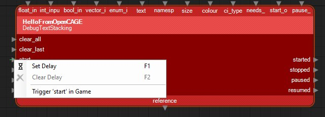
Both send the same call. It's carried out in the game on its next frame, just as if a link had fired into that pin. It goes to the instance you reached by stepping down from the level's root composite (the path at the top of the composite panel). If you opened the composite on its own from the Composite Browser, it goes to every running instance of it.
A call waits for the edits you made just before it to reach the game first, so you can add an entity and trigger its start straight away. The status bar says Live Link: calling "start" on entity... while it waits, then Live Link: called "start" on entity (ending (every instance) when it went to every instance) or Live Link: could not call "start" on entity - and the reason. One call goes at a time: trigger another before the game has taken the last one, and the status bar says Live Link: still waiting for the game to take the last call. The drop-down doesn't appear when several entities are selected, or for an entity with no methods (a composite's parameter entities, say), and neither appears while Live Link isn't connected.
If a call fails, the status bar says why:
While connected, the composite toolbar has a Show Activity button, with a live indicator icon, after Resync and another divider. Press it, and the flowgraph shows what the running game is doing with the composite you have open: each link lights up the moment the game uses it, orange for a logic link and blue for a data link, glowing with dashes running along it the way it went, then fades to a dim shade of its colour that stays until you clear it. Beside the pins, counts show how many times each output has fired and each method has been called. You can watch a script run as you play, see which way it went and how often, and find the links that never fire.
![The OpenCAGE window with Show Activity pressed and Clear Activity beside it on the composite toolbar, showing CCTV_Camera_Passive, reached through BSP_Torrens, ENVIRONMENT_Torrens and Torrens in the path at the top. The trigger links from a Thinker to a VectorDistance, from a VariableFloat to a FloatGreaterThan and on to two LogicOnces glow orange with light dashes. The data links between two VariablePositions, the PointTrackers that write them, two GetRotations, the VectorDistance, the VariableFloat and the FloatGreaterThan glow bright blue. Counts in brackets sit beside the pins, such as on_think [5297] on the Thinker and [5297] trigger on the VectorDistance.](img/activity.jpg)
CCTV_Camera_Passive, reached from the level's root through ENVIRONMENT_Torrens and Torrens, with Show Activity pressed and Clear Activity beside it. Its Thinker triggers the VectorDistance many times a second, the VectorDistance reads its two inputs from the GetRotations and writes its result into the VariableFloat, and the PointTrackers at the top write into the VariablePositions every frame, so the whole page keeps glowing. The numbers in brackets are the counts so far.
Opening another composite, or stepping into another instance, starts afresh. Each of the composite's flowgraph pages lights its own links, and a page you switch to catches up straight away. If Live Link disconnects, what was lit and counted stays on the flowgraph, with Show Activity and Clear Activity on the toolbar, until you clear it or switch Show Activity off.
Keeping track costs the game very little, and next to nothing while Show Activity is off.
Result into a VariableInt's reference, or a PointTracker writing its result. The dashes run the way the value went the last time: into the entity reading it, or from the one writing it into where it's written. When that happens depends on the entity: a TriggerSelect reads its index and a SetInteger writes its Result each time they're triggered, while PointTrackers read and write every frame. Some entities also light a data link when they only look up what's linked to it, such as a list of objects they've been given.A link that's lit but no longer glowing, a dim orange or blue, has been used since you last cleared, though not in the last second and a half. One that keeps its usual colour hasn't been used, so after playing through part of the level, those are the parts of the script that never ran (apart from the cases under Limits).
![Part of CCTV_Camera_Passive's flowgraph twice. Top, labelled Just used: the trigger link from the Thinker's on_think [5609] to the VectorDistance's [5609] trigger glows orange with light dashes, and the data links from two GetRotations into the VectorDistance, and from its Result to a VariableFloat, glow bright blue with light dashes. Bottom, labelled After the glow has faded: the same links in plain dim orange and blue, their counts muted at [5947], and [1] beside the Thinker's stop.](img/activity-fade.jpg)
Top: links the game had just used, with the dashes running the way each one went: down from the GetRotations into the VectorDistance's LHS and RHS as it reads them, and up from its Result into the VariableFloat as it writes its result there. Bottom: the same links a few seconds after the Thinker was stopped with Trigger Method. They stay dimly lit, and the counts stay where they stopped, until you press Clear Activity. The Thinker's stop shows [1] for that call.
While Show Activity is on, each pin the game uses gets a count in brackets, in bold beside its name:
A count is bright while the pin is in use, and muted once it hasn't been used for a second and a half, like the links. Counts over 9999 are shortened, to [10k], [1.2M] and so on. A composite parameter's node shows its count on whichever side its pin is drawn. If a label no longer fits beside its count, the label is cut short, never the count. The counts start again from nothing when you press Clear Activity, switch Show Activity off and on, open another composite or step into another instance.
They show how often each part of a script ran: how many times a loop went round, which way a choice went and how often, or whether something meant to happen once happened twice. Each time an output fires, the methods linked to it are called, so in the pictures above the Thinker's on_think and the VectorDistance trigger it's linked to show the same number.
A composite can be used in many places in a level. Like a method call, Show Activity follows the instance you reached by stepping down from the level's root composite (the path at the top of the composite panel), so you see what that one does: in the pictures above, the one camera reached through ENVIRONMENT_Torrens and Torrens. If you opened the composite on its own from the Composite Browser, it shows every running instance of it at once: a link lights when any of them uses it, including links that only some of them use, and the counts are theirs added together.
Result linked to an output parameter, say), the game never reports it, so that link stays unlit. Reading a parameter, firing out through one, and writing into an instance's parameter from the composite that holds it all light as usual.While connected, the Viewport toolbar has a Live Link Camera drop-down, after Highlight Zones. It links the Viewport's camera to the game's, one way or the other, and your choice is remembered.
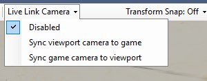
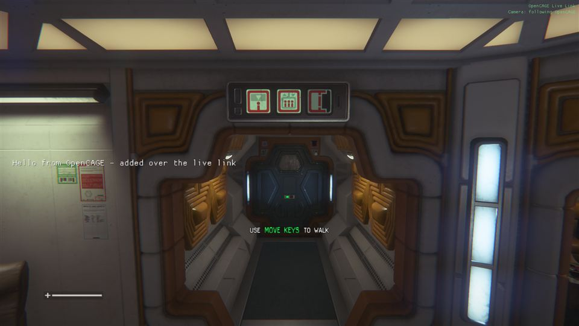
The game drawing a corridor on the Torrens from the Viewport's camera. The overlay in the top-right corner reads Camera: following OpenCAGE.
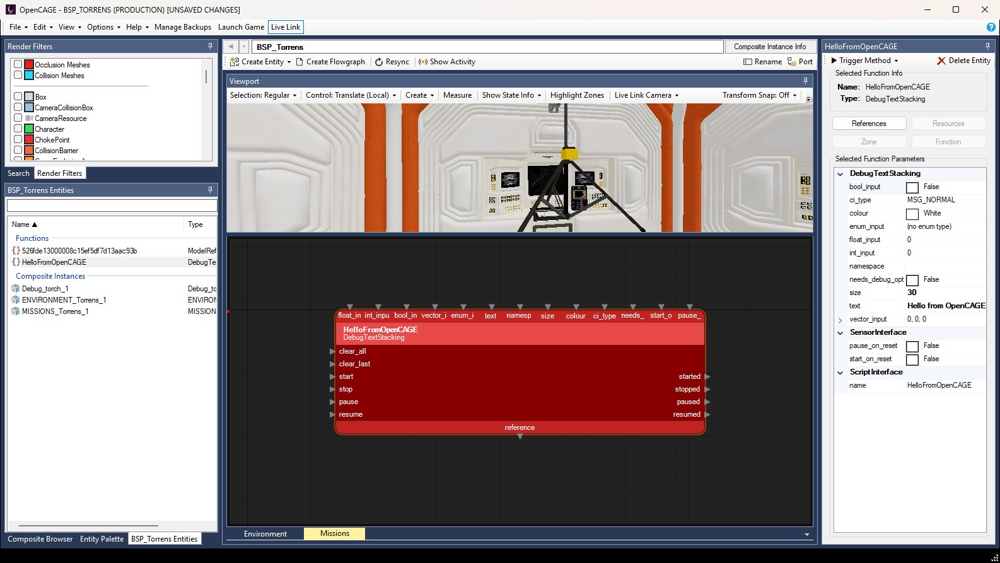
The other way round: the Viewport following the game's camera.
Both follow only while the Viewport shows the level itself (its root composite, or a composite you stepped into from there) and the game is running the level you have open. The game gets its own camera back when you choose Disabled, when Live Link disconnects, or when you open another composite on its own. The player's camera is never moved, so the view goes straight back to it.
With Sync game camera to viewport, the Viewport's camera stays locked for as long as that choice is on and Live Link is connected, even when it has nothing to follow, as in a composite opened on its own: open the level's root composite to see the game's view again. Choose Disabled to move the Viewport yourself again.
Game logic sees the Viewport's camera too. While the game draws from the Viewport's camera, anything that checks what the player's camera sees reacts to it instead: camera viewcone triggers, the alien's checks for whether it's in view, and AI conditions on the camera's direction. It's the same as with Cinematic Tools' free camera, so bear it in mind when testing things that depend on being seen.
Cinematic Tools can stay loaded. While OpenCAGE is driving the game's camera, OpenCAGE's camera wins, and Cinematic Tools' comes back once OpenCAGE lets go. With Sync game camera to viewport, the Viewport follows Cinematic Tools' free camera while it's on.
An AI assistant connected to OpenCAGE can use Live Link too. Its script edits go to the game automatically, as yours do, and it has tools of its own:
runtime_utils: the connection's status, connect and disconnect; what the game is running and where its camera is; push a composite; call a method on an entity; describe a composite's running instances; take a screenshot of the game; load a level; and Show Activity (activity): switch it on or off, clear it, or list the links the game has used in the open composite, with how often and how long ago, and how many times each output fired and each method was called.set_viewport_view with live_link_camera: the Live Link Camera choice, disabled, viewport_to_game or game_to_viewport.set_viewport_camera: puts the Viewport's camera at a position and direction, and the game's with it while the game follows the Viewport.launch_options with live_link: the Enable Live Link box.OpenCAGE_Utils.log then says it could not listen on 127.0.0.1:8765). Close the others and start the game from Launch Game.The game also writes what Live Link did (every edit applied, call made or request turned away) to OpenCAGE_Utils.log in the game folder. OpenCAGE's status bar messages clear after a few seconds, so the log is where to look for one you missed. It's started afresh each time the game starts, so read it before starting the game again.
Each edit the game answers puts a line on the status bar, starting Live Link: composite -, for a few seconds: